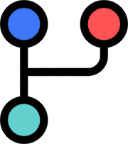

Branches
Branch é uma cópia separada do diretório onde você pode desenvolver de maneira isolada sem afetar o repositório ou mesmo outras Branches. Após finalizar o trabalho você pode combinar seu Branch com o repositório através do Pull Request.
Como criar um Branch local
Estando na pasta do projeto (master), podemos criar um novo branch local usando o comando:
$ git branch branch-001
Após criar o branch é preciso fazer o checkout para acessar o branch:
$ git checkout branch-001
Ou ainda pode criar um novo branch e acessar usando o comando:
$ git checkout -b branch-001
Para verificar o novo branch digite:
$ git status
Fonte: